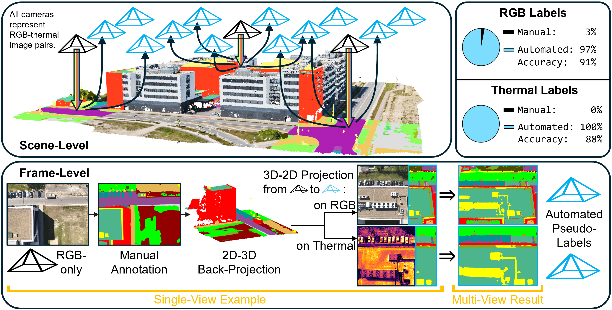
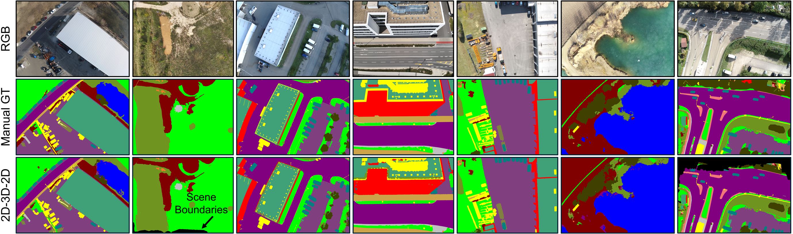
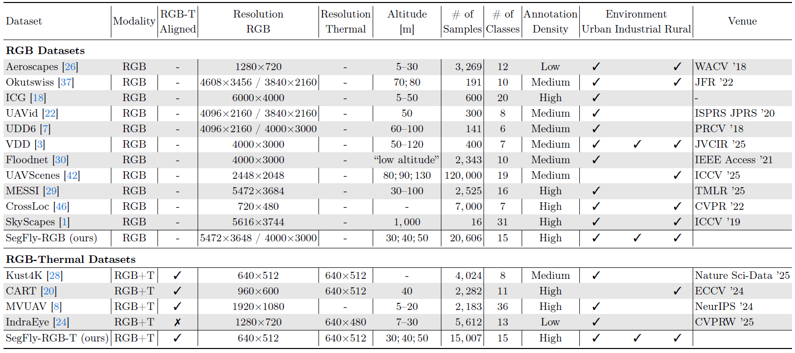
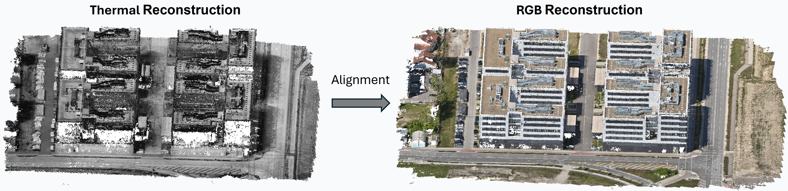
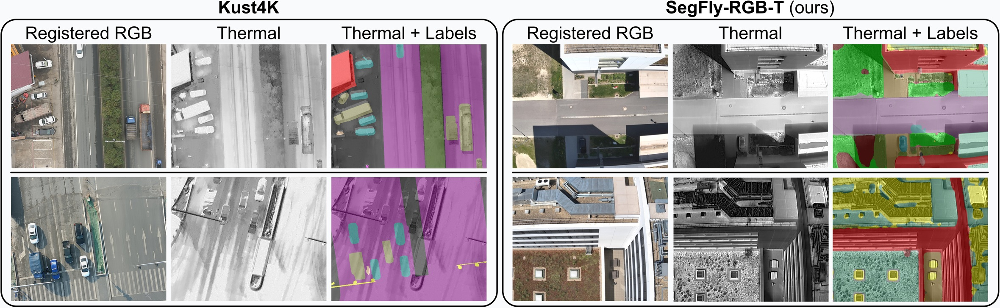
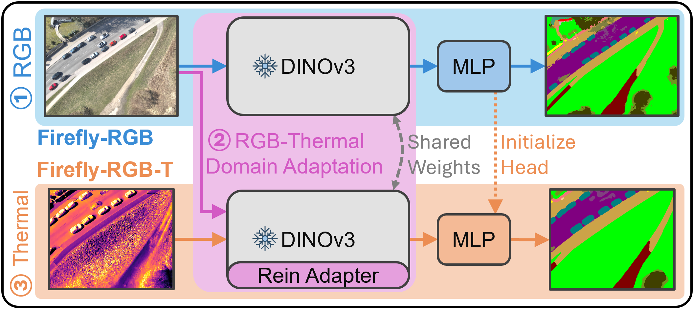
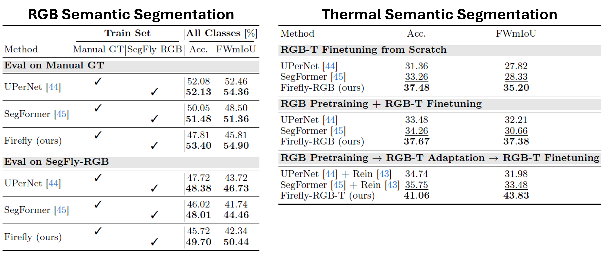
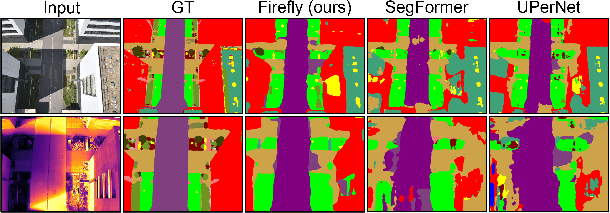
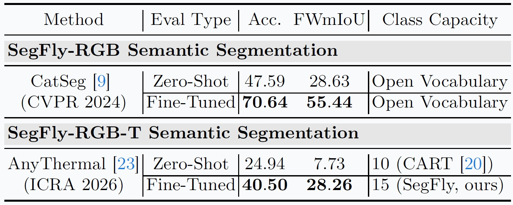

SegFly: A 2D-3D-2D Paradigm for Aerial RGB-Thermal Semantic Segmentation at Scale

Abstract
Semantic segmentation for uncrewed aerial vehicles (UAVs) is fundamental for aerial scene understanding, yet existing RGB and RGB-T datasets remain limited in scale, diversity, and annotation efficiency due to the high cost of manual labeling and the difficulties of accurate RGB-T alignment on off-the-shelf UAVs. To address these challenges, we propose a scalable geometry-driven 2D-3D-2D paradigm that leverages multi-view redundancy in high-overlap aerial imagery to automatically propagate labels from a small subset of manually annotated RGB images to both RGB and thermal modalities within a unified framework. By lifting less than 3% of RGB images into a semantic 3D point cloud and reprojecting it into all views, our approach enables dense pseudo ground-truth generation across large image collections, automatically producing 97% of RGB labels and 100% of thermal labels while achieving 91% and 88% annotation accuracy without any 2D manual refinement. We further extend this 2D-3D-2D paradigm to cross-modal image registration, using 3D geometry as an intermediate alignment space to obtain fully automatic, strong pixel-level RGB-T alignment with 87% registration accuracy and no hardware-level synchronization. Applying our framework to existing geo-referenced aerial imagery, we construct SegFly, a large-scale benchmark with over 20,000 high-resolution RGB images and more than 15,000 geometrically aligned RGB-T pairs spanning diverse urban, industrial, and rural environments across multiple altitudes and seasons. On SegFly, we establish the Firefly baseline for RGB and thermal semantic segmentation and show that both conventional architectures and vision foundation models benefit substantially from SegFly supervision, highlighting the potential of geometry-driven 2D-3D-2D pipelines for scalable multi-modal scene understanding. Data and Code available at https://github.com/markus-42/SegFly
Overview
🆘 Challenges
- Dense annotation at scale is prohibitively expensive: High-resolution aerial imagery requires detailed pixel-wise labeling, making large-scale datasets costly to produce. As a result, most existing benchmarks remain limited in size and restrict the training of modern deep learning models.
- RGB-thermal datasets are particularly constrained: In addition to annotation cost, RGB-thermal datasets require accurate cross-modal alignment. Existing approaches typically rely on hardware synchronization or manual refinement, limiting scalability and flexibility.
- Cross-modal registration is difficult without specialized setups: Differences in sensor characteristics, asynchronous capture, and platform motion make precise alignment between RGB and thermal images challenging when using off-the-shelf UAV systems.
💡 Our Approach
We propose a geometry-driven 2D->3D->2D paradigm that addresses these limitations in a unified framework:
- Label lifting and propagation via 3D reconstruction: A small subset of RGB images (<3%) is manually annotated. These annotations are lifted into a reconstructed 3D point cloud and propagated across all views, enabling dense pseudo-label generation for both RGB and thermal images.
- Scalable pseudo ground-truth generation: By exploiting multi-view redundancy, our pipeline automatically generates 97% of RGB labels and 100% of thermal labels, without any additional manual refinement, while maintaining high annotation accuracy.
- Geometry-driven RGB-thermal registration: Instead of relying on hardware synchronization or 2D matching, we reconstruct thermal imagery in 3D, align it with the RGB point cloud, and perform registration via lens-distortion transfer, achieving strong pixel-level alignment entirely in software.
Data Generation via 2D→3D→2D

2D->3D: Semantic Reconstruction
- Multi-view RGB images are used to reconstruct a dense 3D point cloud.
- A small subset (<3%) of images is manually annotated.
- Labels are lifted into 3D via 2D-3D correspondences.
- Outcome: Dense 3D point cloud with semantic labels.
3D->2D: Semantic Rendering
- The labeled 3D point cloud is projected into all RGB and thermal images.
- A depth-aware rendering pipeline enforces visibility consistency (Z-buffering and occlusion filtering), spatial densification (splatting), and complete coverage (depth-guided label distribution).
- Outcome: 97% of RGB labels and 100% of thermal labels are generated automatically, with no manual refinement required.
The SegFly Dataset
SegFly is built upon the geo-referenced aerial imagery of the OccuFly benchmark and contains 9 distinct scenes captured with DJI Phantom 4 RTK and Mavic 3 Enterprise Series UAVs. It comprises 20,606 high-resolution RGB images and 15,007 geometrically aligned RGB-T pairs across all seasons and 30m, 40m, and 50m altitudes in urban, industrial, and rural environments. Only 586 RGB images (2.84%) at 50m altitude were manually annotated, while our 2D-3D-2D framework automatically generates the remaining 97.16% of RGB labels and 100 % of thermal labels, with 15 semantic classes. SegFly is provided in two variants: SegFly-RGB (all 20,606 images) and SegFly-RGB-T (the 15,007 aligned pairs from thermal-capable flights).


RGB-T Image Registration via 2D→3D→2D

💡 Key Idea
- Reconstruct RGB and thermal imagery independently in 3D.
- Align thermal point cloud to RGB-based semantic point cloud using ICP.
- Transfer alignment back to 2D via thermal lens-distortion-aware reprojection.
✅ Result
- 87.05% pixel-level registration accuracy.
- Applicable to off-the-shelf UAV platforms.
- No hardware synchronization required.
- No cross-modal feature matching.
- Enables scalable RGB-T-aligned data generation.

Firefly Baseline

Firefly is a unified approach for RGB and thermal semantic segmentation trained in three stages:
- RGB Pre-training: A fixed DINOv3 encoder is combined with a lightweight MLP head and optimized on labeled RGB data. This represents standalone RGB semantic segmentation.
- RGB-Thermal Domain Adaptation: Registered RGB-T pairs are used for self-supervised, parameter-efficient alignment. Thermal-specific Rein adapters learn residual mappings into the RGB feature space while all other parameters remain frozen.
- Thermal Fine-Tuning: A dedicated thermal MLP head (initialized from the RGB head) is trained jointly with the Rein adapters on labeled thermal data, while encoder and RGB head stay frozen.


Aerial Vision Foundation Models

⚙️ Setup
- We evaluate SegFly on modern vision foundation models.
- Zero-shot vs fine-tuned evaluation.
- RGB Model: CatSeg (CVPR 2024).
- Thermal Model: AnyThermal (ICRA 2026).
✅ Result
- Fine-tuning on SegFly leads to substantial gains: CatSeg improves from ~47->70% accuracy, and AnyThermal improves from ~25->40% accuracy.
🧩 Conclusion
- SegFly provides an effective supervision signal for adapting foundation models to aerial RGB and thermal segmentation tasks.
- Zero-shot performance is limited on aerial data.
Key Findings
- Geometry-driven supervision scales effectively:
Dense pseudo-labels generated from minimal manual annotation achieve high accuracy (~91% RGB, ~88% thermal) and provide strong supervision for training segmentation models. - SegFly supervision consistently outperforms limited manual labels:
Across multiple architectures, models trained on SegFly pseudo-labels outperform those trained only on sparse manual annotations, demonstrating the effectiveness of the 2D->3D->2D pipeline. - RGB-thermal alignment can be achieved without hardware synchronization:
The proposed geometry-based registration achieves strong pixel-level accuracy (~87%) using only software-based alignment. - Vision foundation models benefit substantially from SegFly:
While zero-shot performance is limited in aerial settings, fine-tuning on SegFly leads to significant improvements, highlighting the importance of large-scale, well-structured supervision.
BibTeX
@misc{gross2026segfly,
title={SegFly: A 2D-3D-2D Paradigm for Aerial RGB-Thermal Semantic Segmentation at Scale},
author={Markus Gross and Sai Bharadhwaj Matha and Rui Song and Viswanathan Muthuveerappan and Conrad Christoph and Julius Huber and Daniel Cremers},
year={2026},
eprint={2603.17920},
archivePrefix={arXiv},
primaryClass={cs.CV},
url={https://arxiv.org/abs/2603.17920},
}